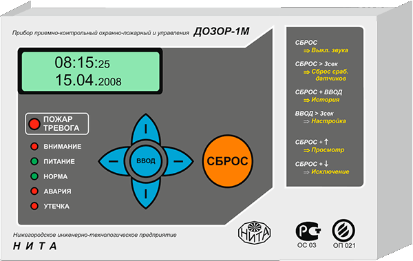
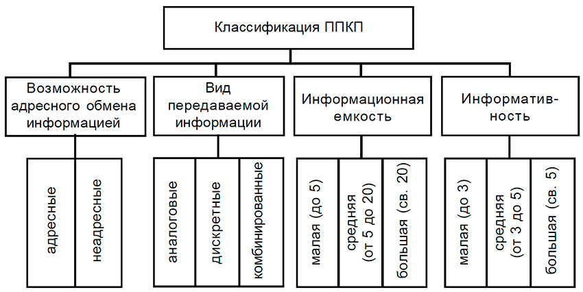

Пожарная каланча - это прототип современной системы пожарной сигнализации и оповещение о пожаре. Пожарная каланча в давние времена это была вышка с колоколом, в котором звонили пр виде дыма в любой части города. Телега со штатом пожарных водителей выезжала на пожар. Со временем, когда появились машины, пожарные команды выезжали на пожары уже на машинах с гидрантами. Машины заранее наполнялись водой. С ростом городов и заменой деревянных строений на каменные дома количество пожаров не уменьшилось. Многоэтажные здания, современные материалы внутренний отделки строений только усложнили устранение пожаров. Вспомнить хотя бы, сколько известно случаев, когда сгорели общественные места - кафе, рестораны, музеи и картинные галереи и т.д, и всё это потому, что были не соблюдены условия противопожарной безопасности и неправильно сделан выбор и установка противопожарных систем.
Каланча утратила своё название, и вместо колокола пришли механические и электрические приспособления, которые предназначены для обнаружения пожара.
Телеграфный аппарат был создан русским ученым П. Шилингом в 1832 году. Спустя 5 лет С.Морзе создал также телеграфный аппарат с использованием знаков - азбукой Морзе. На основании этих аппаратов был создан прототип извещателя, который был системы Вернер-Сименс. и он впервые стал использоватся берлинской пожарной командой в 1851 г. Своеобразные пожарные извещатели установили в местах в массовым пребыванием людей. При использовании новых приборов связи были выявлены их недостатки. Первое, они были слишком громоздкими, поэтому монтаж пожарной сигнализации был очень сложным и трудоемком. Это повлияло на ценц такой сигнализации. И самое главное, для передачи сигналов при помощи азбуки Морзе надо было содержать специально обученный персонал, который должен был еще и проводить обслуживание пожарной сигнализации.
Пожарная сигнализация (ПС) это комплект технических средств, предназначение которых обнаружить возгорание, задымление или пожар и своевременно оповестить об этом человека
Её еще называют традиционной. Принцип работы данного типа основан на изменение сопротивленияё в шлейфе систем пожарной сигнализации. Датчики могут находиться только в двух физических состояниях «норма» и «пожар». В случае фиксации фактора пожара, датчик изменяет своё внутреннее сопротивление и приёмно-контрольный пибор выдает сигнал тревоги по тому шлейфу, в котором установлен этот датчик. не всегда визуально можно определить место сработки, т.к в пороговых системах на одном шлейфе устанавливают в среднем 10-20 пожарных извещателей.
Для определения неисправности ШС (а не состояние датчиков) применяется оконечный резичстор. Устанавливаются он всегда в конце шлейфа. При использовании пожарной тактики "сработка ПС по двум извещвтелям, для получения сигнала внимание или вероятность пожара в каждый датчик устанавливается добавочное сопротивление. Это позволяется применять автоматические системы пожаротушения на обьекте и исключения возможных ложных тревог и порчи имущества. Автоматика пожаротушения запускается только в случае одновременной сработки двух и более извещателей.
К пороговому типу можно отнести следующие ППКП:
К плюсам традиционных систем можно отнести простоту монтажа и низкую стоимость оборудования. Самые значительные недостатки - неудобство обслуживания пожарной сигнализации и большая вероятность ложных тревог (сопротивление может меняться от многих факторов, датчики не могут передавать информацию о запыленности), снизить количество которых можно только используя другой тип ПС и оборудования.
Более совершенная система, способна в автоматическом режиме периодически проверить состояние датчиков. В отличие от пороговой сигнализации принцип работы заключается в ином алгоритме опроса датчиков. Каждому извещателю присвоен свой уникальный адрес, что позволяет приёмно-контрольному прибору отличать их и понимать конкретную причину и место неисправности.
Свод правил СП5.13130 допускает установку только одного адресного извещателя при условии, что:
Датчики в адресно-пороговой сигнализации могут уже находится нескольких физических состояниях - норма, пожар, неисправность, внимание, запыленность и других. При этом датчик самостоятельно переходит в другое состояние, что позволяет определить место неисправности или возгорания с точностью до извещателя.
к адресно-пороговому типу пожарной сигнализации можно отнести следующие ППКП:
Самый прогрессивный на сегодняшний момент тип пожарной сигнализации. Обладает тем же функционалом что и адресно-пороговые системы, но отличается в способе обработки сигналов от датчиков. Решение о переходе в режим «пожар» или любое другое состояние, принимает именно контрольная панель, а не извещатель. Это позволяет настраивать работу пожарной сигнализации под внешние факторы. ППКП одновременно контролирует состояние параметров установленных устройств и анализирует полученные значения, что позволяет существенно снизить вероятность ложных тревог.
Помимо этого такие системы обладают еще не оспоримым преимуществом – возможность применять любую топологию адресной линии – шина, кольцо и звезда. Например, в случае обрыва кольцевой линии, она распадется на два независимых проводных шлейфа, которые полностью сохранят свою работоспособность. В линиях типа звезда можно использовать специальные изоляторы короткого замыкания, которые определят место обрыва линии или её замыкания
Очень удобны такие системы в обслуживании, т.к. можно выявить в режиме реального времени извещатели, которые требуют продувки или замены.
К адресно-аналоговому типу пожарной сигнализации можно отнести следующие ППКП:
Во время заказчика системы проектировщиуи учитывают все требования технического задания заказчика и обращают внимание на надежность функционирования, строимость монтажных работ и требования к регламентному обслуживанию. Когда критерий надежности для более простой системы начинает понижаться, проектировщики переходят к использованию более высокого уровня.
Радиоканальные варианты используются в тех случаях, когда прокладка кабелей становится экономически невыгодной. Но такой вариант требует больше средств на обслуживание и поддержание устройств в рабочем состоянии за счет периодической замены элементов питания.
Типы и виды систем пожарной сигнализации, а так же их классификация представлена в ГОСТ Р 53325–2012 «Техника пожарная. Технические средства пожарной автоматики. Общие технические требования и методы испытаний».
Адресные и неадресные системы мы уже рассмотрели выше. Тут можно добавить, что первые позволяют устанавливать неадресные пожарные извещатели, через специальные расширители. На один адрес можно подключить до восьми датчиков.
По общей сложности информационной ёмкости, т.е. общему количеству подключаемых устройств и шлейфов делятся на приборы:
По информативности, иначе по возможному количеству выдаваемых извещений (пожар, неисправность, запыленность и прочие) делятся на приборы:
Кроме этих параметров системы классифицируются по: